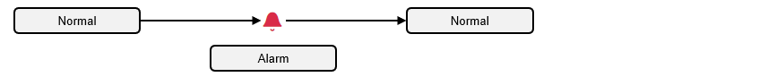
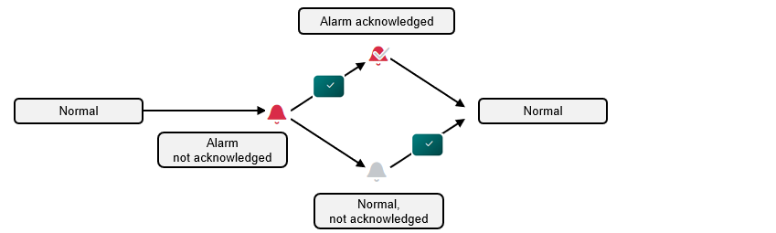
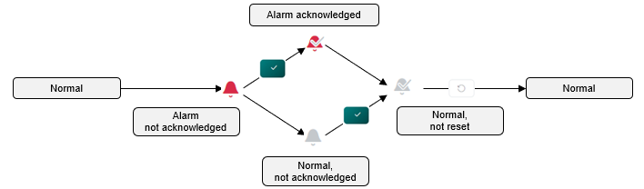

Alarm Strategy
Your system controls your building automation and control and system plants. Some alarms (for example, a fault) occur that must be brought to the attention of the users. The alarm system processes the alarms and issues corresponding reports (for example, to a printer).
Your system reacts automatically to faults (for example, the ventilation plant is automatically locked in the event of a fire alarm). An alarm is issued for control deviations (for example, a dirty filter triggers only a simple alarm).
In both cases, the system changes to an alarm state and a corresponding alarm is issued. The system returns to a normal state after the cause of the alarm is eliminated and the user resets the system.
Simple Alarm
Simple alarms (or alarm objects) do not require confirmation or reset. Normal operation is resumed, if the monitored state (for example, a dirty filter) returns to normal.

Basic Alarm
More important alarms (for example, lack of water) must be acknowledged. After troubleshooting the alarm state and confirming it, the plant returns to a normal state.

Extended Alarm
For extended alarms (for example, frost alarm), the plant returns to normal operation as soon as the monitored state returns to a normal range. This ensures that important alarms are not missed once the alarm state is eliminated.
